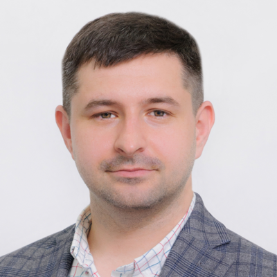
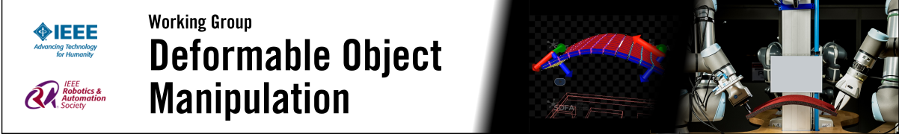

Manipulating cloth, cables, food, and tissue is essential for robotics in manufacturing, logistics, healthcare, and domestic environments. Their evolving geometry, contact conditions, and material behavior make state partially observable and require continuous adaptation.
The topic is timely as foundation models and vision-language-action systems broaden robot capabilities, while tactile sensing, proprioception, and compliant actuation provide richer physical feedback. Connecting these advances raises three key questions:
These questions directly engage the sensing, control, and learning communities, with hardware and simulation providing supporting context. This event emphasizes the connection between multimodal state estimation and closed-loop action. Expected outcomes include shared research priorities, recommendations for evaluating robustness and recovery, and opportunities for collaborative experimental resources.
We welcome the comunity to this ICRA's workshop to follow the talks from our invited speakers offering perspectives from hardware, sensing, modeling, control, and learning, contributed spotlight talks, an interactive poster session, and a moderated discussion around shared challenges in deformable-object manipulation. Each invited talk will include dedicated Q&A, and speakers and contributors will be encouraged to present a failure case, limitation, or unresolved question alongside their results. Brief audience polls and an anonymous digital question channel will allow all attendees to shape the discussion, including those less comfortable speaking publicly.
Talk Topics: Compliant Hands and Grasping
Short Bio: Manuel G. Catalano is a Principal Investigator at the Italian Institute of
Technology, where he leads research on physical AI and human–robot co-evolution. His
research focuses on soft robotics, compliant robotic hands, human–robot interaction,
prosthetics, and rehabilitation. He contributed to the development of the Pisa/IIT SoftHand
and other robotic systems designed for dexterous, adaptive physical interaction.
Talk Topics: Textile Manipulation
Short Bio: Kazuhiro Kosuge is a Chair Professor in the Department of Mechanical
Engineering at City University of Hong Kong. He is internationally recognized for his
contributions to robotics, control engineering, human–robot interaction, and robot
cooperation. He previously served as a professor and Distinguished Professor at Tohoku
University and as President of the IEEE Robotics and Automation Society.
Talk Topics: Assistive Manipulation of Food and Cloth
Short Bio: Tapomayukh “Tapo” Bhattacharjee is an Assistant Professor in Cornell
University's Department of Computer Science and directs the EmPRISE Lab. His research
focuses on assistive robotics, human–robot interaction, haptic perception, and manipulation
in unstructured environments. His work aims to help people with mobility limitations perform
activities of daily living, including robot-assisted feeding and the manipulation of
deformable objects.
Talk Topics: Perception and Control for Deformable-Object Manipulation
Short Bio: David Navarro-Alarcon is an Associate Professor in the Department of
Mechanical Engineering at The Hong Kong Polytechnic University, where he leads the Robotics
and Machine Intelligence Laboratory (ROMI Lab). His research focuses on robot motion
planning, learning, perception, and control, with particular emphasis on manipulation and
the interaction between robots and deformable objects.
Talk Topics: Mechanics-Informed Learning for Deformable Object Manipulation
Short Bio: Uksang Yoo is a postdoctoral researcher at UC Berkeley's AUTOLab, working with
Professor Ken Goldberg. He received his Ph.D. from Carnegie Mellon University's Robotics
Institute, where he was affiliated with the BIG and Momentum labs. His research explores how
contact mechanics, tactile sensing, and physics-based models can improve robot learning and
generalization in dexterous manipulation, including interactions with compliant and
deformable objects.
Talk Topics: World Models as Scalable Robotics Data Engines
Short Bio: Yunzhu Li is an Assistant Professor of Computer Science at Columbia University,
where he directs the Robotic Perception, Interaction, and Learning Lab (RoboPIL). Before joining Columbia,
he was an Assistant Professor at UIUC and a postdoc at the Stanford Vision and Learning Lab with Fei-Fei Li
and Jiajun Wu; he received his PhD from MIT CSAIL, advised by Antonio Torralba and Russ Tedrake. His
research in robot learning focuses on structured world models for deformable object manipulation, robotic
foundation models, and multi-modal perception. His recognitions include the ICRA 2024 Best Conference Paper
Award, the CoRL 2023 Best Systems Paper Award, and an Amazon Research Award.
Tentative schedule, subject to change.
| Time | Activity | Speaker/Moderator/Lead |
|---|---|---|
| 8:30 - 8:40 | Opening Remarks | Organizers |
| 8:40 - 9:40 | Invited Speakers 1, 2, 3 | Catalano, Kosuge, Bhattacharjee |
| 9:40 - 10:00 | Panel: Dexterous DOM | Session 1 speakers |
| 10:00 - 10:15 | Poster Spotlights | Selected authors |
| 10:15 - 11:00 | Coffee Break & Posters | All participants |
| 11:00 - 12:00 | Invited Speakers 4, 5, 6 | Navarro, Yoo, Li |
| 12:00 - 12:20 | Panel: Generalization and Robustness in DOM | Session 2 speakers |
| 12:20 - 12:30 | Award and Closing | Organizers |
The list of accepted abstract will be publihsed on Wednesday, May 5 with the Author Notification
We invite short extended abstracts presenting research contributions and preliminary results on the topics of
the workshop.
We particularly encourage submissions from students, early-career researchers, underrepresented groups, and
institutions or regions less frequently represented at major robotics conferences.
Submissions will undergo double-blind peer review based on relevance, technical quality, clarity, and potential
to stimulate discussion. Up to 15 accepted contributions will be presented as posters in an interactive poster
session, with a subset selected for spotlight presentations. Presenters are encouraged to address limitations,
failure cases, or unresolved questions alongside successful results to highlight new research opportunities.
Where authors grant permission, accepted abstracts and presentation materials will be made publicly available
on this website.
| Paper Submission Opens | Monday, February 15 |
| Paper Submission Deadline | Thursday, April 22 |
| Review Period | Thursday, April 22 - Monday, May 3 |
| Author Notification | Wednesday, May 5 |
| Camera-Ready Deadline | Monday, May 17 |
| Spotlight Video Deadline | Monday, May 17 |
| Poster Deadline | Monday, May 17 |
| Event | TBD |

This workshop is endorsed by the Working Group on Deformable Object Manipulation.
